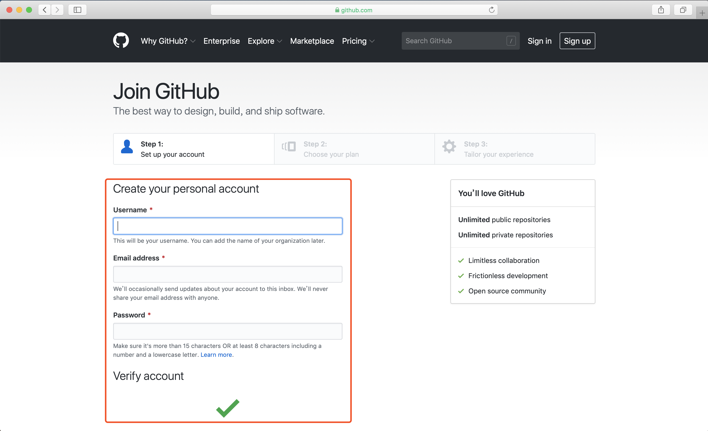
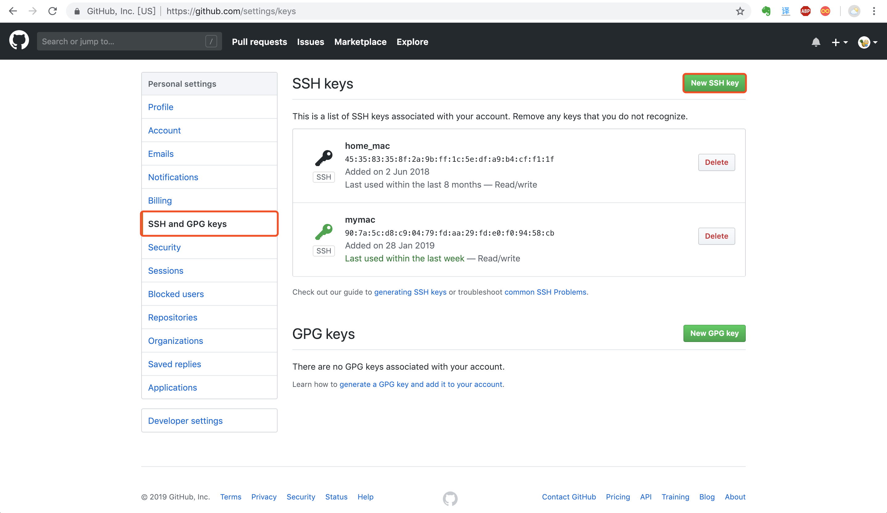

Mac 配置 GitHub
1.登陆GitHub申请账号

2.打开终端，输入命令行
$ open ~/.ssh
如果显示如下提示The file xxx does not exist.
则需要生成ssh，输入如下命令
$ ssh-keygen -t rsa -C xxx@github.com
(xxx@github.com指的是刚刚注册的账号)
然后一直回车，完成后再次输入命令
open ~/.ssh
最终结果会打开一个文件夹，显示如下内容
右键点击id_rsa.pub，打开方式选择文本编辑器，复制文件内容
3.登陆GitHub网站并选择 [settings]->[SSH and GPG keys]->[New SSH key]
Title: 可随意填写，建议输入当前计算机名称以作区分Key: 刚才复制的ssh key
注: 如果想在不同机器上都可以使用同一个GitHub账号，可添加多个SSH key，那么就可以在不同机器上协同工作了。
4.回到终端，输入
$ ssh -T git@github.com
输入yes
如果出现下面提示，表明已经与GitHub链接成功了。
5.输入以下命令修改提交的用户名和email
$ git config –global user.name “your name”
$ git config –global user.email you@example.com
6.回到GitHub网站，创建测试项目
7.回到终端，输入以下命令克隆仓库中的项目(clone后面是刚才复制的项目地址)
$ git clone git@github.com:dusmit/test.git
打开桌面我们可以看到创建的test项目已经克隆好了
8.在test文件夹中创建ReadMe文件
9.输入以下命令将更新提交到远端仓库
$ cd test
$ git add ReadMe.md
$ git commit -m “update ReadMe.md”
$ git push origin master